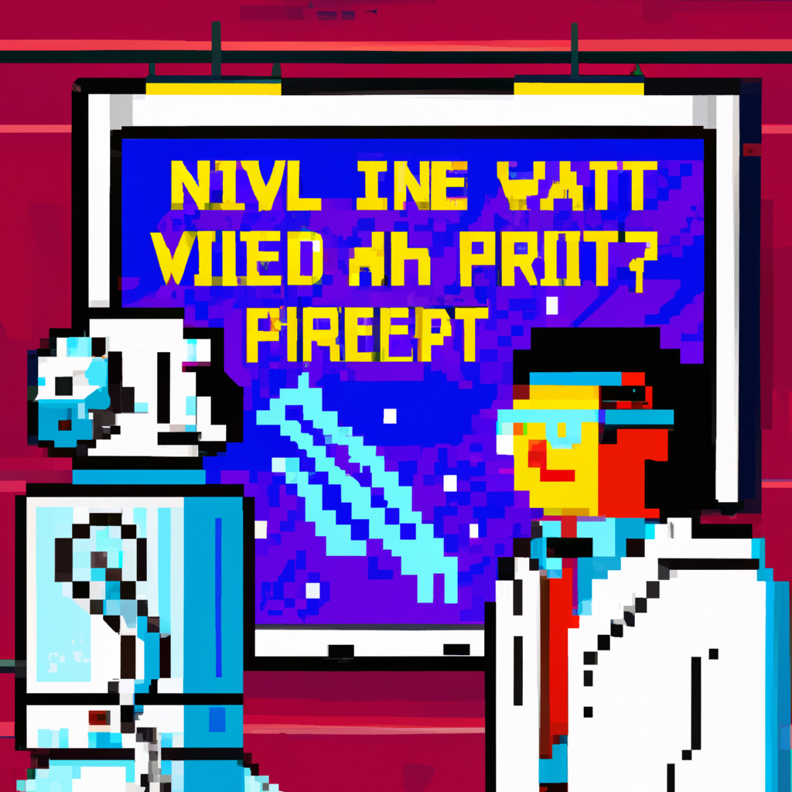

Why AI will never replace physicists
As technology advances, machine learning and artificial intelligence (AI) are becoming increasingly important in the field of physics. AI has made great strides in providing useful analysis and predictions, but there are still some areas in which it will never be able to replace physicists.
First, AI is limited in its ability to understand complex physical phenomena. It can only make predictions based on the data it is given, and it lacks the ability to make connections between the various physical processes. Therefore, it cannot truly understand the underlying physical principles at play. This means that AI can only ever provide a limited understanding of the physical universe.
Second, AI lacks the creativity and intuition of a physicist. AI can only work within the confines of the data it is given. It does not have the ability to think outside the box and come up with creative solutions to complex problems.
Finally, AI does not have the ability to interact with the physical world. It cannot interact with materials or experiment with different conditions as a physicist can. This means that it cannot truly understand the implications of its predictions in the real world.
In conclusion, while AI has made great strides in providing valuable analysis and predictions, it will never be able to replace the physicists who understand the underlying physical principles at work. AI can only work within the confines of the data it is given, and it lacks the creativity and intuition of a physicist. Therefore, AI will never be able to replace a physicist.